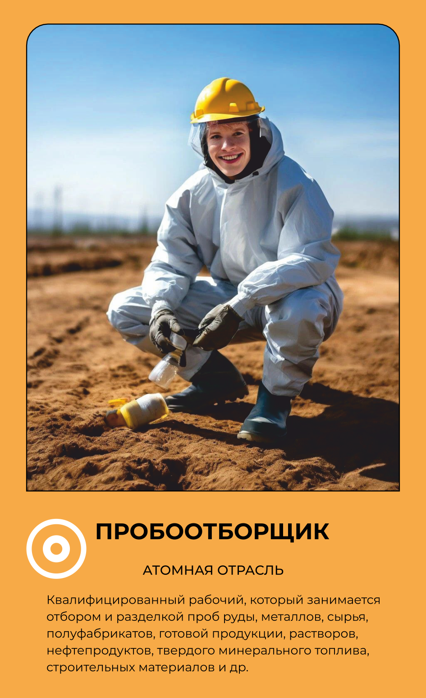

Пробоотборщик
Берёт пробы там, где обычному человеку нельзя.
Основной вид деятельности
Отбирает пробы веществ и материалов на объекте атомной отрасли для последующего лабораторного анализа.
Что делает на рабочем месте
Пробоотборщик берёт образцы воды, воздуха, грунта или технологических жидкостей на разных участках предприятия так, чтобы проба точно отражала реальное состояние среды — от этого зависит достоверность всех дальнейших анализов. Перед отбором проверяет радиационный фон на месте промышленным дозиметром, чтобы оценить, безопасно ли находиться в этой точке и сколько времени. Собранные образцы маркирует и в кратчайшие сроки передаёт в лабораторию, где их исследуют на содержание радионуклидов, химический состав или другие показатели. Работает по строгому графику отбора проб, установленному нормативами предприятия, и фиксирует каждый отбор в документации. Часто перемещается между разными зонами объекта — от вентиляционных систем до водоёмов-охладителей, — поэтому должен хорошо ориентироваться на территории и в правилах доступа. Как и другие работники контролируемой зоны, носит белую спецодежду атомщика — комбинезон, каску и респиратор.
Что производит
сбор представительных образцов, чтобы обеспечить точность, надежность и репрезентативность данных, необходимых для контроля качества, научных исследований, экологического мониторинга и других целей
Оборудование и инструменты
Спецодежда и СИЗ
одежды
Белая спецодежда атомщика (каски, спецовки и комбинезоны, респираторы)
Спецобувь
обуви
Белая спецобувь
Где учиться
18.01.33 Лаборант по контролю качества сырья, реактивов, промежуточных продуктов, готовой продукции, отходов производства (по отраслям) 20.02.01 РАЦИОНАЛЬНОЕ ИСПОЛЬЗОВАНИЕ ПРИРОДОХОЗЯЙСТВЕННЫХ КОМПЛЕКСОВ
Где работать
Данные — карточка 38 из 160, отрасль «Атомная». Зарплата — оценочная вилка по региону.